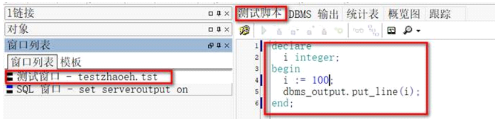
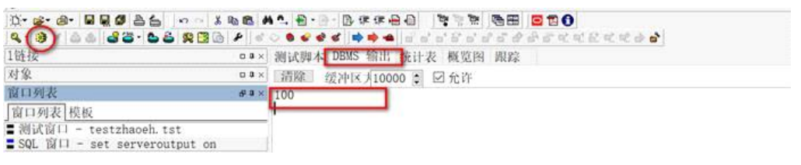
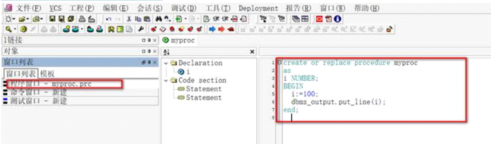
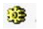
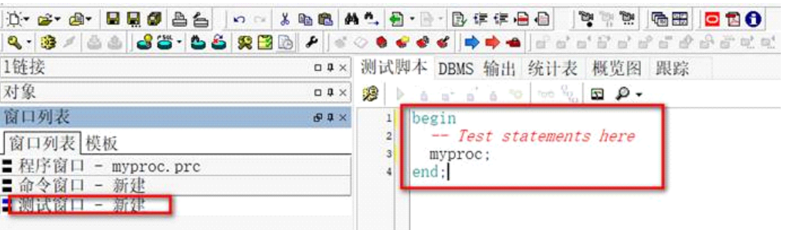
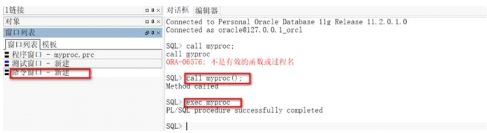

PL/SQL编程
1、PLSQL
1. PLSQL编程，oracle扩展sql
PLSQL是一种过程化的结构型语言，主要用来编写包含SQL语句的程序。
2. PLSQL编程-分隔符;和/，oracle扩展sql
PLSQL中，一般将程序都保存在*.sql脚本文件中。
在sqlplus命令行或者*.sql脚本中，最常见的分隔符就是分号;。
但是在有的sql脚本中，也会使用/作为一个语句的结束符。
3. PLSQL脚本的commit，oracle扩展sql
所有的DDL语言（create,drop,alter）等都不使用commit，当然也不用提交，因为这不是事务；
所有的DML语言都需要在脚本或者命令行使用cmomit进行事务提交，如果脚本中不使用cmomit提交事务的话，将不生效；如果命令行窗口不使用commit进行事务提交的话，则可以通过第三方工具比如PLSQL客户端手动点击提交按钮进行事务提交。
4. PLSQL编程-匿名块，oracle扩展sql
匿名块就是一个plsql代码块，不是存储过程、不是函数等。匿名块可以直接运行，运行完毕oracle服务器就结束了，不能够被其他代码复用。
打开plsql的新建->test window，即可编写测试脚本，即匿名的plsql块。
语法如下：
declare
--声明一些变量，常量，用户定义的数据类型以及游标的声明等
--declare部分可选，如不需要可以不选
begin
--主体程序，在这里可以加入各种合法程序
--begin部分必须存在
exception
--异常处理块，当程序中出现异常执行该部分
--exception部分可选，如不需要可以不选
end; --主体程序结束，最后的分号必须要有
示例：测试窗口编写匿名PLSQL块

点击工具栏的运行图表，查看运行结果：

5. PLSQL编程-注释，oracle扩展sql
--单行注释
/*多行注释*/
6. PLSQL编程-运算符，oracle扩展sql
+ 加法运算符
- 减法运算符
* 乘法运算符
/ 除法运算符
= 等于运算符
> 大于运算符
< 小于运算符
<> 不等于运算符
!= 不等于运算符
~= 不等于运算符
^= 不等于运算符
<= 小于等于运算符
>= 大于等于运算符
:= 赋值运算符
() 括号运算符
; 语句分隔符
% 属性指示符
, 项目分隔符
@ 数据库链接指示符
/ 字符串分界符
: 绑定变量指示符
** 指数运算符
=> 链接运算符
.. 范围操作符
|| 字符串拼接符
<< 起始标签分界符
>> 终结标签分界符
-- 单行注释指示符
/* */ 多行注释指示符
<space> 空格
<tab> 制表符
7. PLSQL编程-数据类型，oracle扩展sql
8. PLSQL编程-变量和常量，oracle扩展sql
9. PLSQL编程-程序三大结构，oracle扩展sql
10. PLSQL编程-函数，oracle扩展sql
11. PLSQL编程-过程，oracle扩展sql
(1) 右键文件选择新建存储过程：

(2) 编写好存储过程后点击运行按钮:

即将当前存储过程进行编译。
注意，存储过程、函数等oracle对象都必须先编译才能够被外部程序执行，而plsql匿名块是直接点击运行（编译和运行是一起执行的）。
(3) 存储过程编译好之后即可执行。执行存储过程有两个地方：
(3.1) 新建测试窗口，编写匿名PLSQL块，显式调用已经编译好的存储过程，点击运行按钮开始执行：

(3.2) 新建命令窗口，在命令行窗口调用已经编译后的存储过程：

总结，执行存储过程的三种方式：
1. 如果是命令窗口就执行exec 存储过程名；
2. 如果是程序中就使用call 存储过程名()【命令行窗口也可以，必须加分号】；
3. 如果是plsql窗口，就使用begin 存储过程名；end；
注意：PLSQL客户端只是一个工具，是对sqlplus客户端的包装，其中命令窗口对应的就是sqlplus客户端，所以必须加分号。而sql窗口只是执行可视化的快捷sql操作窗口！
所有的增删改查语句在存储过程中都必须使用如下的方式：
create or replace procedure myproc_backup
as
BEGIN
execute immediate 'create table email_bak as select * from email';
end myproc_backup;
2、程序包package
程序包简称包，用于将逻辑相关的pl/sql块或者元素（变量、常量、自定义数据类型、异常、过程、函数、游标）等组织在一起，作为一个完整的单元存储在数据库中，用名称来标识程序包。具备面向对象的程序设计语言的特点 。是对pl/sql或者元素的封装。
程序包类似于面向对象中的类，其中变量相当于类的成员变量，而过程或者函数就相当于类的方法。
基本原理：
程序包由两个部分组成：包头和包体。包头是一个包的说明部分，包体是程序包的具体定义。这两部分独立的存储在数据字典中，包头是包体和应用程序之间的接口，里面只存在过程、函数、游标等的名称。包体部分才是这些过程、函数、游标等的具体实现。
一般而言，可以先独立的编写过程和函数，等完善后，再逐步的将这些函数和过程进行打包封装。